Danni da intelligenza artificiale: verso nuove regole sui risarcimenti
Il quadro europeo e nazionale in materia di responsabilità da intelligenza artificiale è in movimento. Il tema centrale è come provare il danno quando il sistema è opaco e impreved…

Debiti ereditari: nessun pagamento senza vera accettazione dell'eredità
Il Tribunale di Marsala, con la sentenza n. 405/2026, ribadisce un principio spesso ignorato: essere chiamati all'eredità non significa averla accettata. Senza accettazione, i debi…

Giudicato penale e processo tributario: l'efficacia ex art. 21-bis anche per reati non tributari
Un orientamento della Cassazione riconosce che l'assoluzione penale può fare stato nel processo tributario anche per reati non tributari, quando i fatti accertati coincidono con qu…

Offendere il capo del personale: quando scatta il licenziamento
Un'offesa rivolta al responsabile del personale, se isolata e dettata dall'ira, non basta a giustificare il licenziamento in tronco. Una recente ordinanza della Cassazione ha ribad…

GPS aziendale: il Garante vieta il controllo continuo dei dipendenti
Con il Provvedimento n. 382/2026 il Garante Privacy pone un limite netto alla geolocalizzazione dei dipendenti: il tracciamento continuo tramite GPS aziendale è vietato. I dati rac…
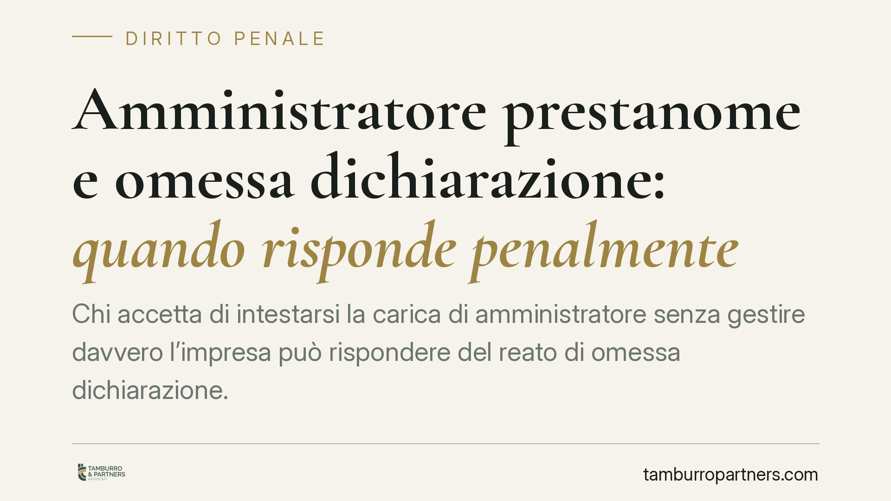
Amministratore prestanome e omessa dichiarazione: quando risponde penalmente
Chi accetta di intestarsi la carica di amministratore senza gestire davvero l'impresa può rispondere del reato di omessa dichiarazione. La Cassazione ricorda però un limite netto: …
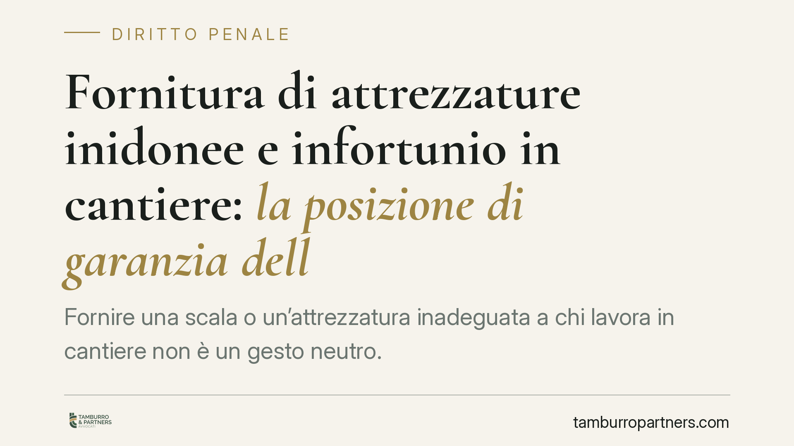
Fornitura di attrezzature inidonee e infortunio in cantiere: la posizione di garanzia dell'appaltatore
Fornire una scala o un'attrezzatura inadeguata a chi lavora in cantiere non è un gesto neutro. Secondo un orientamento della Cassazione penale, l'appaltatore che si ingerisce nell'…
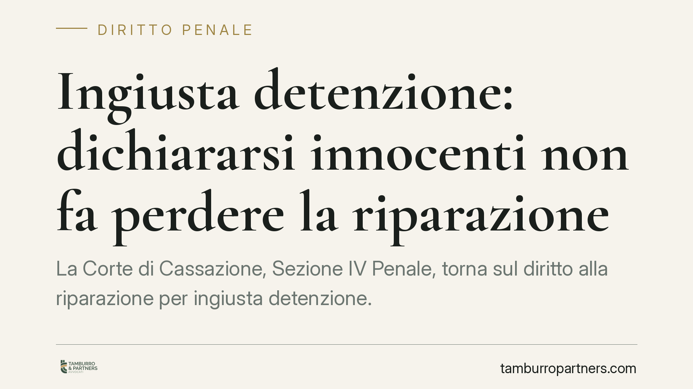
Ingiusta detenzione: dichiararsi innocenti non fa perdere la riparazione
La Corte di Cassazione, Sezione IV Penale, torna sul diritto alla riparazione per ingiusta detenzione. Dichiararsi innocenti o estranei alle accuse non può far perdere il risarcime…
Licenziamento via WhatsApp: quando è valido secondo i giudici
Una recente pronuncia di merito ha ritenuto valido il licenziamento comunicato tramite file inviato su WhatsApp, anche privo di firma autografa, quando è il lavoratore stesso a pro…
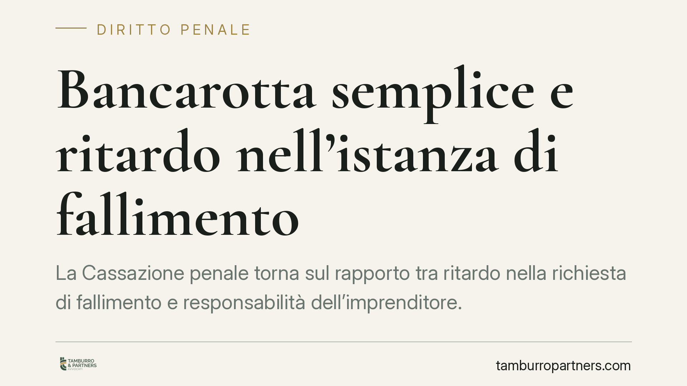
Bancarotta semplice e ritardo nell'istanza di fallimento
La Cassazione penale torna sul rapporto tra ritardo nella richiesta di fallimento e responsabilità dell'imprenditore. Quando l'omessa o tardiva iniziativa aggrava il dissesto, può …
L'assegno di mantenimento si può compensare con altri crediti?
Chi vanta un credito verso l'ex coniuge può trattenere le somme dovute a titolo di mantenimento fino a concorrenza? La questione tocca il divieto di compensazione previsto per i cr…
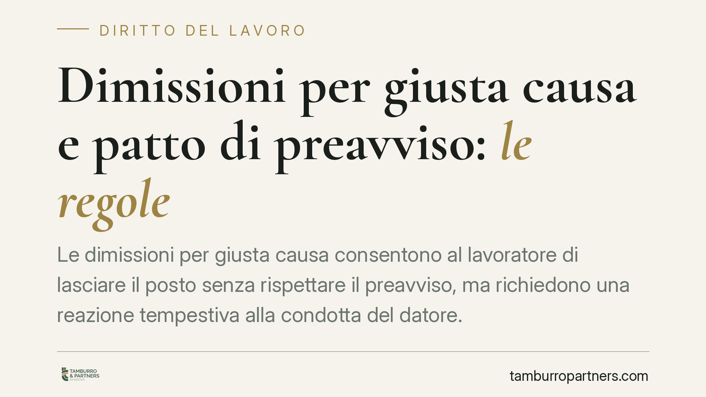
Dimissioni per giusta causa e patto di preavviso: le regole
Le dimissioni per giusta causa consentono al lavoratore di lasciare il posto senza rispettare il preavviso, ma richiedono una reazione tempestiva alla condotta del datore. Diverso …
Ufficio troppo freddo: il lavoratore può rifiutarsi di lavorare?
Un ambiente di lavoro con temperature inadeguate può giustificare il rifiuto della prestazione? Il tema tocca l'obbligo di sicurezza del datore e i limiti entro cui il dipendente p…
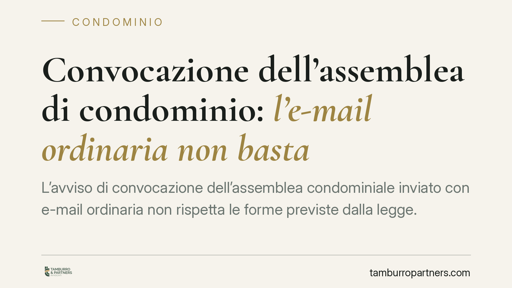
Convocazione dell'assemblea di condominio: l'e-mail ordinaria non basta
L'avviso di convocazione dell'assemblea condominiale inviato con e-mail ordinaria non rispetta le forme previste dalla legge. Il difetto può rendere annullabile la delibera assunta…
Assegno divorzile e rifiuto di un'offerta di lavoro: quando scatta la revoca
Chi riceve l'assegno divorzile ha il dovere di attivarsi per raggiungere l'autonomia economica. Un orientamento consolidato della Cassazione riconosce che il rifiuto ingiustificato…
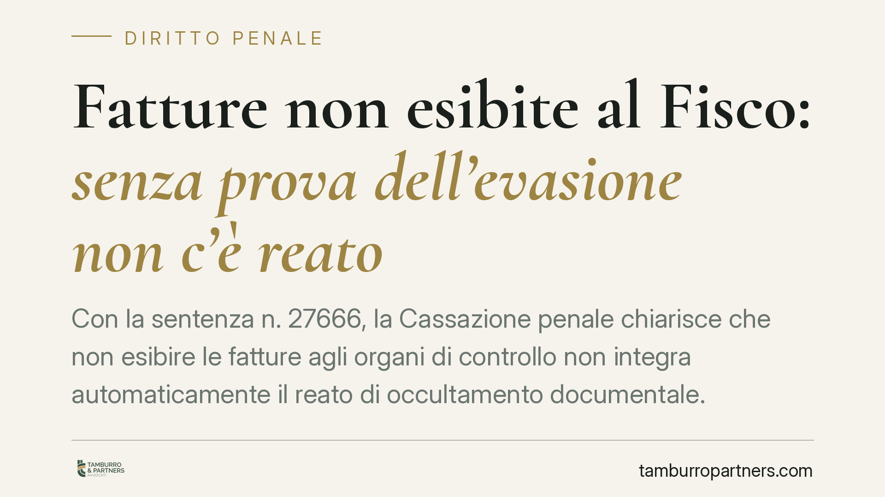
Fatture non esibite al Fisco: senza prova dell'evasione non c'è reato
Con la sentenza n. 27666, la Cassazione penale chiarisce che non esibire le fatture agli organi di controllo non integra automaticamente il reato di occultamento documentale. Servo…
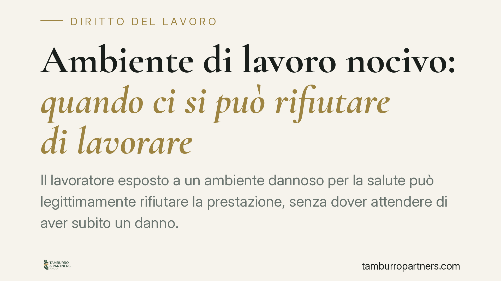
Ambiente di lavoro nocivo: quando ci si può rifiutare di lavorare
Il lavoratore esposto a un ambiente dannoso per la salute può legittimamente rifiutare la prestazione, senza dover attendere di aver subito un danno. La giurisprudenza di legittimi…
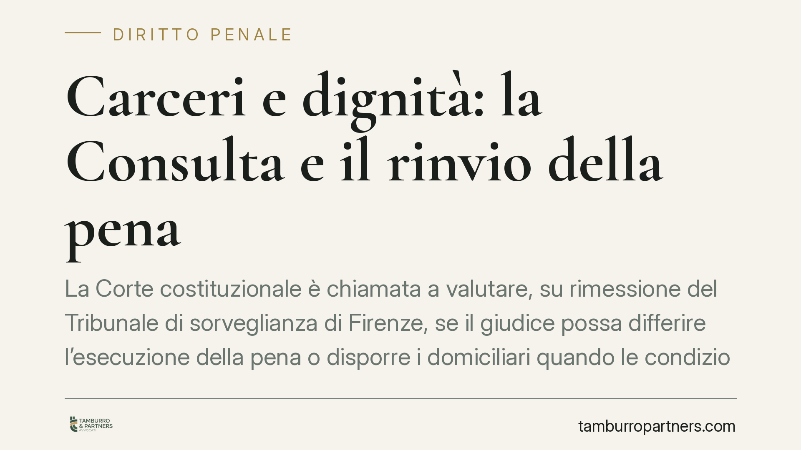
Carceri e dignità: la Consulta e il rinvio della pena
La Corte costituzionale è chiamata a valutare, su rimessione del Tribunale di sorveglianza di Firenze, se il giudice possa differire l'esecuzione della pena o disporre i domiciliar…
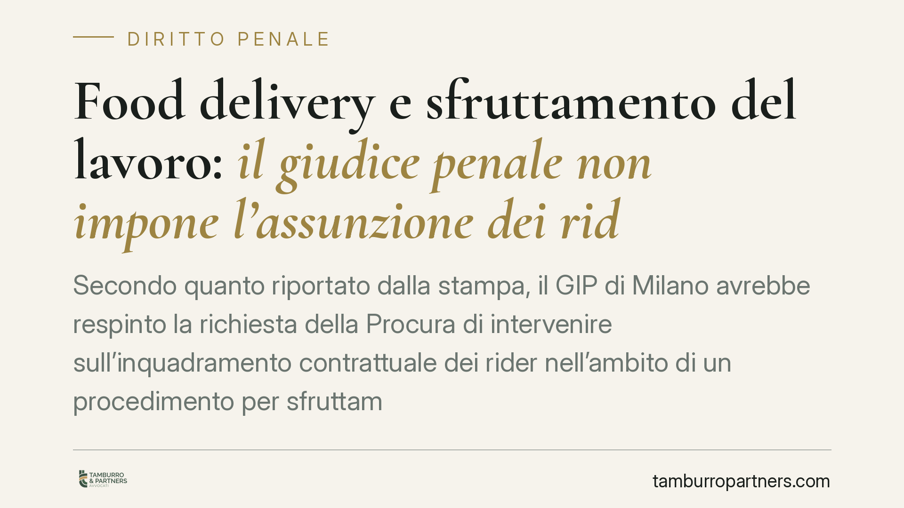
Food delivery e sfruttamento del lavoro: il giudice penale non impone l'assunzione dei rider
Secondo quanto riportato dalla stampa, il GIP di Milano avrebbe respinto la richiesta della Procura di intervenire sull'inquadramento contrattuale dei rider nell'ambito di un proce…
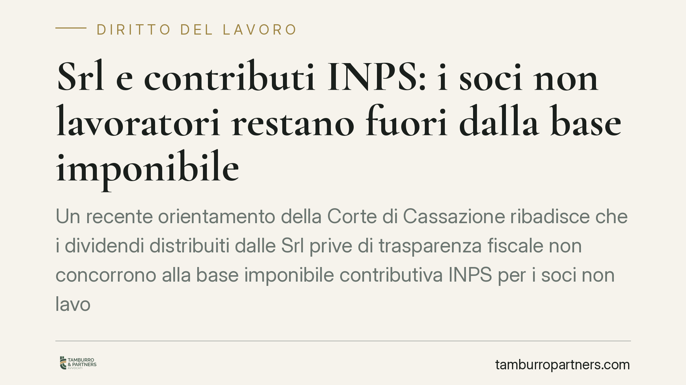
Srl e contributi INPS: i soci non lavoratori restano fuori dalla base imponibile
Un recente orientamento della Corte di Cassazione ribadisce che i dividendi distribuiti dalle Srl prive di trasparenza fiscale non concorrono alla base imponibile contributiva INPS…
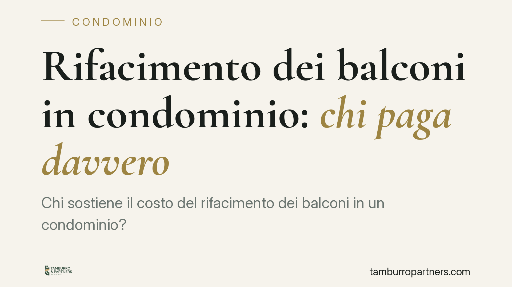
Rifacimento dei balconi in condominio: chi paga davvero
Chi sostiene il costo del rifacimento dei balconi in un condominio? La risposta dipende dalla natura di ciascun elemento: la struttura aggettante è privata, ma alcune parti con fun…
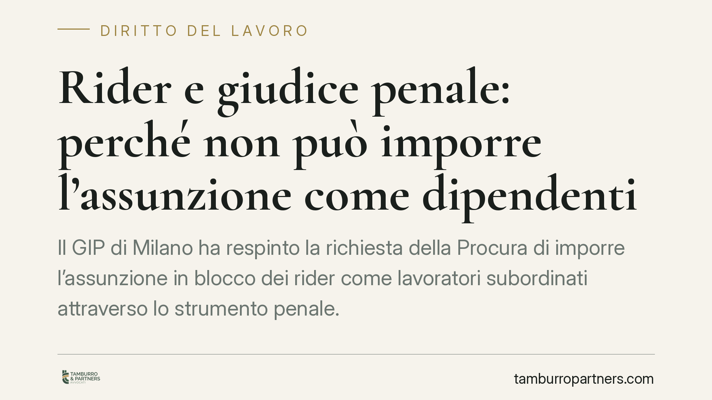
Rider e giudice penale: perché non può imporre l'assunzione come dipendenti
Il GIP di Milano ha respinto la richiesta della Procura di imporre l'assunzione in blocco dei rider come lavoratori subordinati attraverso lo strumento penale. La decisione tiene f…
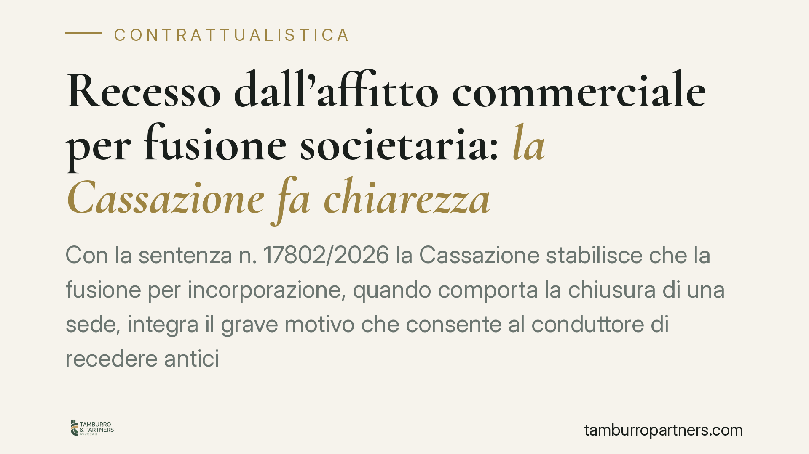
Recesso dall'affitto commerciale per fusione societaria: la Cassazione fa chiarezza
Con la sentenza n. 17802/2026 la Cassazione stabilisce che la fusione per incorporazione, quando comporta la chiusura di una sede, integra il grave motivo che consente al conduttor…
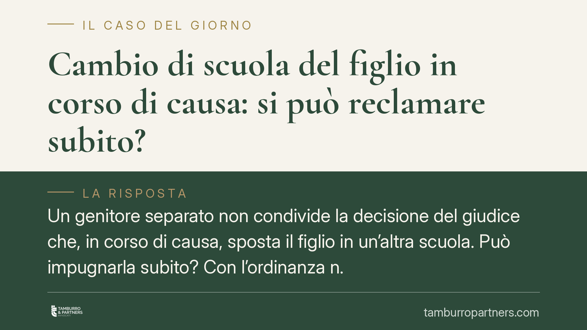
Cambio di scuola del figlio in corso di causa: si può reclamare subito?
Un genitore separato non condivide la decisione del giudice che, in corso di causa, sposta il figlio in un'altra scuola. Può impugnarla subito? Con l'ordinanza n. 17245/2026 la Cas…
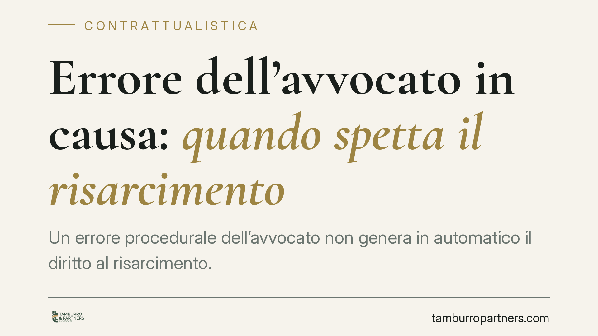
Errore dell'avvocato in causa: quando spetta il risarcimento
Un errore procedurale dell'avvocato non genera in automatico il diritto al risarcimento. Secondo l'orientamento consolidato della Cassazione, il cliente deve dimostrare che, senza …
Costrizione al ricovero in clinica privata: concussione o induzione indebita?
Un medico ospedaliero che, abusando del proprio ruolo, spinge il paziente a farsi operare nella clinica privata dove opera può integrare un reato contro la pubblica amministrazione…
Falso giuramento sulla parcella dell'avvocato: quando scatta il reato
Giurare il falso in giudizio non è una semplice scorrettezza processuale: può integrare un reato. È il caso, ricorrente nel contenzioso sulle parcelle, di chi nega di aver ricevuto…
Mansioni superiori e diritto alla promozione: l'onere della prova
Chi svolge mansioni superiori può ottenere l'inquadramento nel livello corrispondente, ma la strada passa dalla prova. Secondo l'orientamento consolidato, è il lavoratore a dover d…
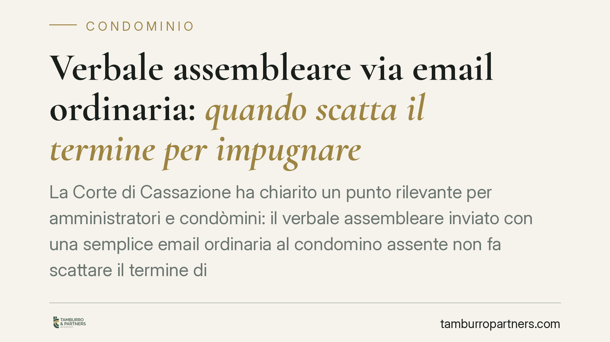
Verbale assembleare via email ordinaria: quando scatta il termine per impugnare
La Corte di Cassazione ha chiarito un punto rilevante per amministratori e condòmini: il verbale assembleare inviato con una semplice email ordinaria al condomino assente non fa sc…
Testamento olografo con data incompleta: quando è annullabile
Un testamento olografo che riporta solo l'anno, privo di giorno e mese, presenta una data incompleta. La Cassazione ricorda che questo vizio rende l'atto annullabile, non nullo, e …